Coolant liquid on the machine (task 0346)
The test mill (VMC) cuts a closed pocket and an open slot with flood coolant (14 l/min). Left: the coolant as before (jets and splash only). Right: with Liquid on the machine ticked, Detail Normal. Cycles, 24 samples, on the processor of the 4-core test machine; test models only.
Close-up: the block on the table
Frame 120: the pocket is cut and fills. 250: the slot; the liquid spills onto the table and runs along the T-slots. 330: the tool waits over the pocket, the flood still on. 385: 2 s after M9 – the pocket stays full, the table runs off.
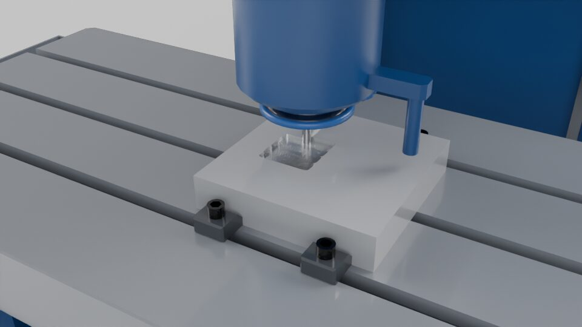
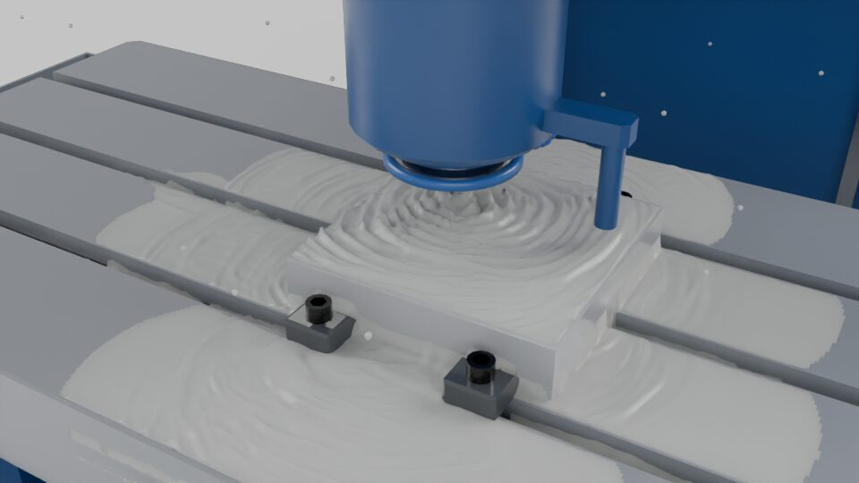
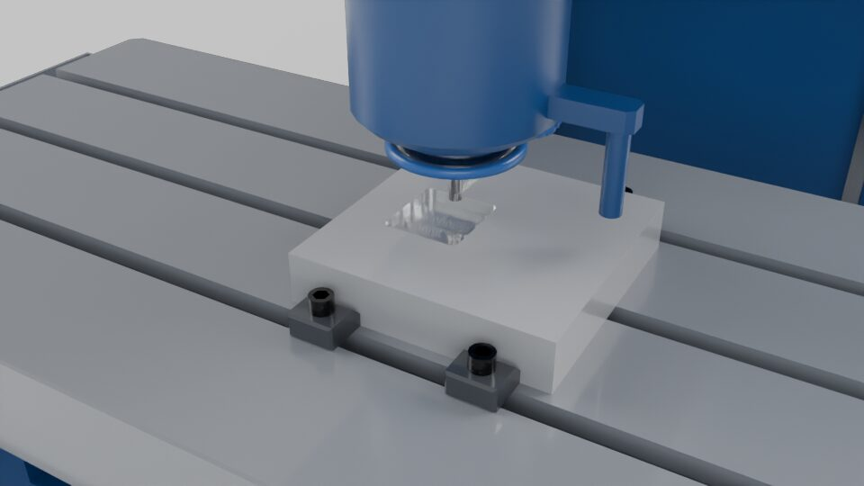
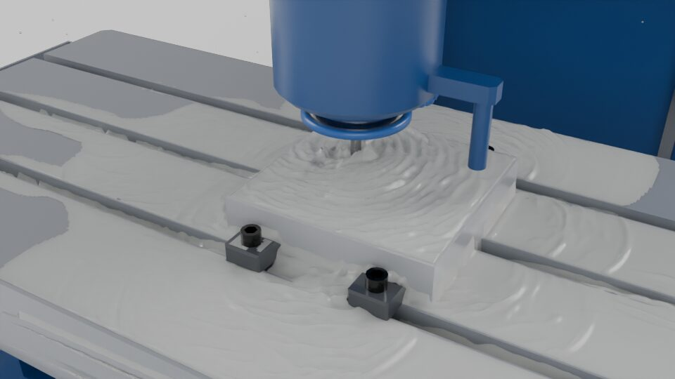
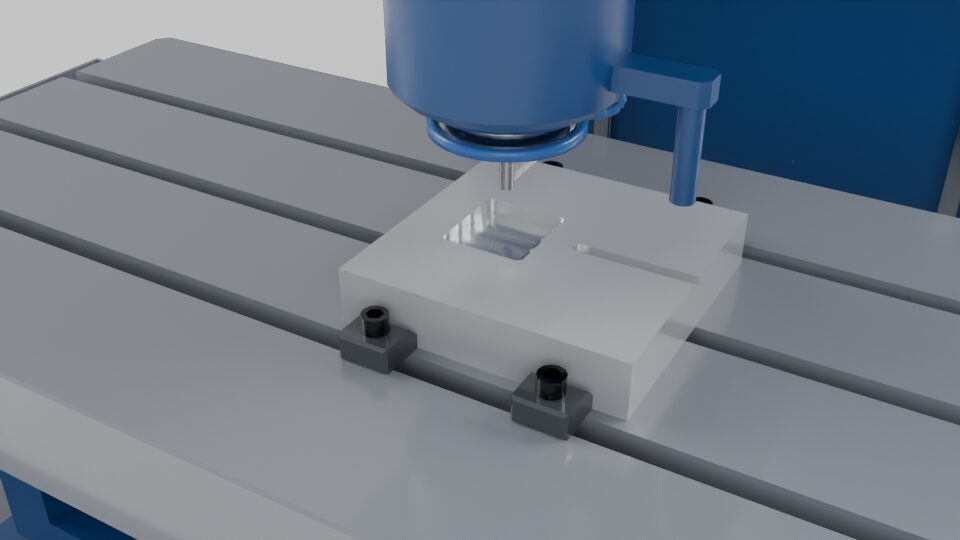
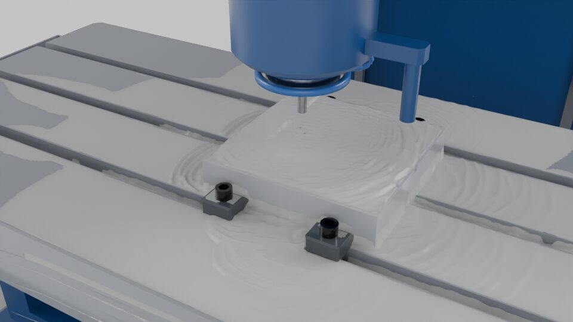
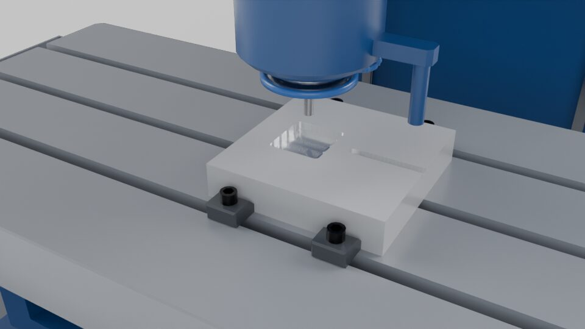
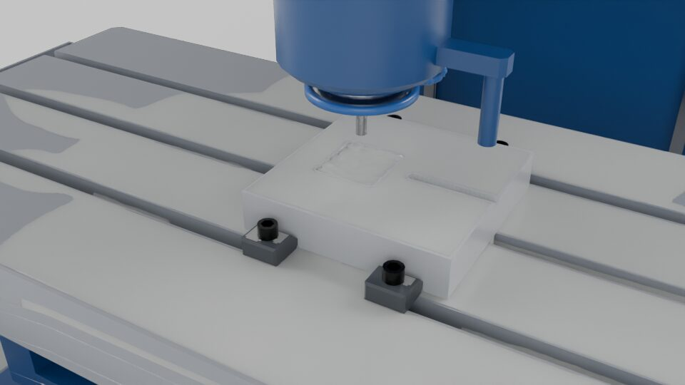
Wide: off the table's end into the chip tray
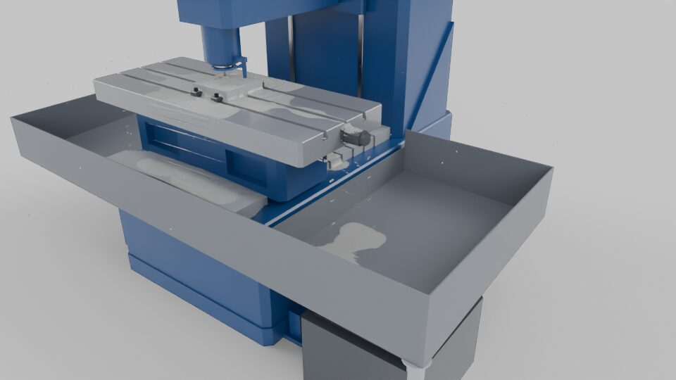
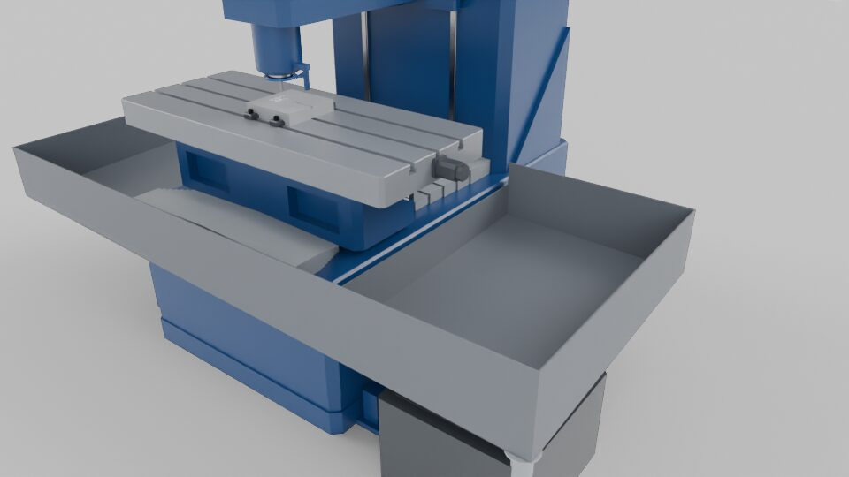
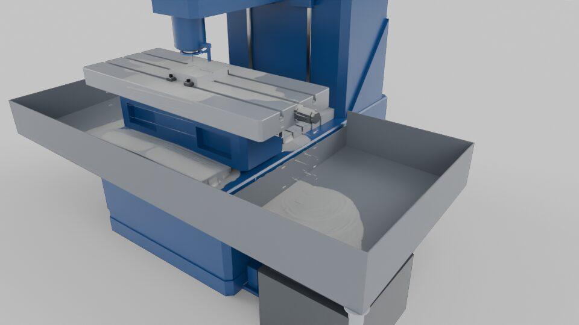
To look at on your PC
| What | Where |
|---|---|
| The EEVEE looks (Clear / Milky / Blended) | Test tour > Machining > "Coolant liquid on the machine", Go; then 4 Motion > CNC machine > Coolant > EEVEE look, and an EEVEE picture (5 Scene & Render, engine EEVEE) for each. Say which one looks best on the RTX 3090. |
| How long a 10-minute program takes | Help > Fresing Render PC check > Heavy: the line "Milling: coolant liquid of a 10-minute program". |